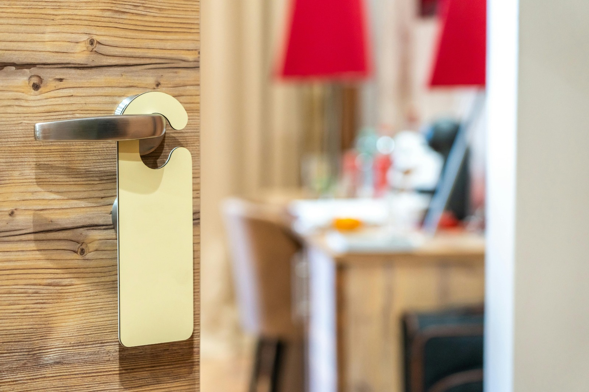
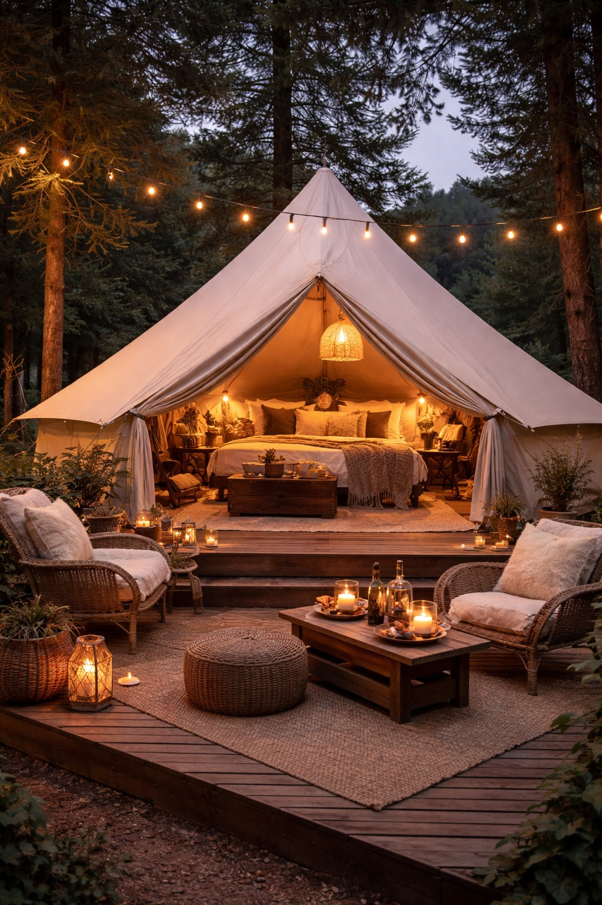

10 ans
d’expérience en management touristique, avec une conviction : la performance repose sur l’énergie des équipes.


J’accompagne les structures touristiques de la Drôme à clarifier leur vision,
renforcer leur cohésion et stabiliser l’énergie collective, en saison comme hors saison.




Je m’appelle Marie. Pendant des années, j’ai observé la même difficulté dans de nombreuses structures touristiques : beaucoup d’implication individuelle, mais une dynamique collective qui se fragilise au fil des saisons. C’est là que j’interviens : remettre du sens, de la clarté et de la cohérence dans la façon de travailler ensemble.
Mon approche relie stratégie humaine et actions concrètes. Nous travaillons sur les habitudes, l’organisation, la communication et la posture managériale pour créer une culture d’équipe solide, vivante et durable, au service de l’expérience client.


10 ans
d’expérience en management touristique, avec une conviction : la performance repose sur l’énergie des équipes.
2 formations
en coaching et sophrologie, pour allier méthode et bien-être dans mes accompagnements.
1 passion
révéler la force distinctive de chaque structure touristique et la transformer en résultats concrets.
Mes accompagnements
Pour directions de structures touristiques
J’accompagne les directions de structures touristiques à construire une culture claire, alignée et opérationnelle. Nous travaillons l’alignement entre promesse client, organisation interne et réalité terrain pour fluidifier les décisions. Nous installons des rituels managériaux qui renforcent l’engagement, la qualité de service et la fidélisation des équipes. Résultat : une structure où chaque décision et chaque action vont dans le même sens, au bénéfice de l’expérience client.
Prendre rendez-vousPour managers et équipes terrain
J’accompagne les managers et les équipes terrain pour canaliser l’énergie collective et la transformer en performance concrète. En renforçant la cohésion, la communication et la coordination, les tensions diminuent et la qualité de service progresse durablement. Résultat : des équipes plus sereines, plus efficaces et plus fidèles, même dans les périodes de forte activité.
Prendre rendez-vousValeurs & méthode
Une méthode en 4 étapes pour transformer la dynamique d’équipe des structures touristiques en leviers visibles de cohésion et de performance.
01
Nous posons un diagnostic précis des pratiques d’accueil, des dynamiques d’équipe et des points de friction opérationnels.
02
Nous définissons des repères clairs pour aligner posture, communication, décisions et qualité de service au quotidien.

03
Nous canalisons l’énergie collective grâce à un travail concret sur la posture managériale, la communication et la collaboration.
04
Nous mesurons les évolutions et ajustons les actions pour ancrer les progrès dans la durée, de saison en saison.

Avis
“Marie nous a aidés à clarifier notre vision et à remettre du sens dans nos décisions. L’équipe est beaucoup plus alignée.”
“Nous avons retrouvé une vraie dynamique collective. Les managers communiquent mieux et les tensions ont nettement diminué.”
“L’accompagnement est concret et humain. On a gagné en cohésion, en engagement et en efficacité au quotidien.”
“Les rituels mis en place ont transformé notre façon de travailler. Les décisions sont plus fluides et plus cohérentes.”
Vous avez des questions ? J’y réponds.
J’adopte une approche orientée résultats qui combine clarté stratégique et intelligence relationnelle. Nous commençons par un diagnostic, puis nous construisons des actions concrètes pour renforcer la cohésion, la culture managériale et la performance durable.
Prêt à avancer
Un premier échange pour clarifier vos enjeux et définir la meilleure trajectoire d’accompagnement.
Prendre rendez-vous